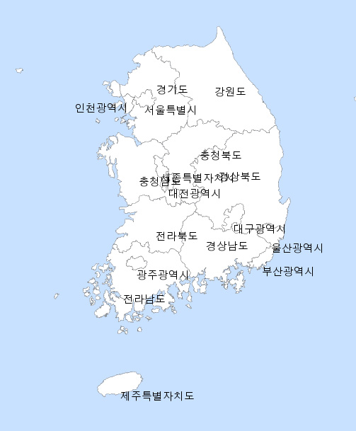

분석지도 >
통계지도 체험
통계지도체험입니다.
작업선택
전국
시도
시군구
입력방식 선택
직접입력
엑셀로 입력
데이터 조회방식
지도 보기
막대 그래프 보기
원그래프 보기
다운로드 하기
출력하기
데이터 직접입력
서울특별시
부산광역시
대구광역시
광주광역시
대전광역시
울산광역시
세종특별자치시
경기도
강원도
충청북도
충청남도
전라북도
전라남도
경상북도
경상남도
충청북도
충청남도
전라북도
전라남도
경상북도
경상남도

범 례
30% 이상
25%~30%
25%~30%
25%~30%
25%~30%
25%~30%
15% 미만
시도
통계값
서울특별시
부산광역시
대구광역시
광주광역시
대전광역시
울산광역시
세종특별자치시
경기도
강원도
충청북도
충청남도
전라북도
전라남도
경상북도
경상남도